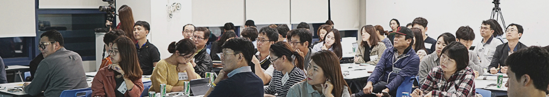
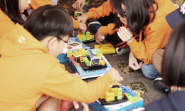
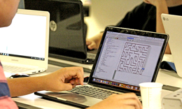
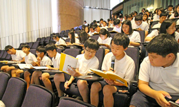
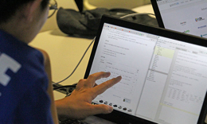

교육협력
미래에 능동적으로 대처할 수 있는 청소년 IT교육, 전문 IT인력 양성을 위한 Kakao 트랙, 내 삶에 도움이 되는 카카오 서비스 이용을 위한 Kakao 클래스 까지, 카카오는 더 좋은 제주의 삶과 미래를 위해 노력합니다.
카카오는 청소년 IT교육에 적극 나서고 있습니다. 제주 초등학생들에게 변화하는 지식정보 사회에 능동적으로 대처할 수 있도록 소프트웨어 교육을 강화하고, 중/고등학생들에게는 꿈을 키울 수 있도록 진로체험 프로그램을 운영하고 있습니다.
-
초등 SW교육 누적 참여 학교
58개 -
초등 SW교육 누적 참여 학생
1,400명 -
진로체험 누적 참여 학생
9,020명
제주대 공학교육센터와 카카오 현업 근무자가 공동으로 운영하며, 기업체가 필요로 하는 수요자 중심 커리큘럼으로 구성되어 있습니다. 2007년 4월 산학협력 체결 후 지금까지 운영해오면서 다른 산학협력 프로그램에 벤치마킹 될 정도로 우수사례로 꼽힙니다.
-
누적 참여 학생
138명 -
누적 기부 금액
3.2억원 -
국내 IT기업 취업률
80.4%
카카오 서비스 플랫폼의 활용 노하우를 배우는 강의 프로그램으로, 제주도 내 예비 창업자, 소상공인, 창작자, 스타트업을 대상으로 합니다. 실무 중심의 강의와 서비스 담당자들의 멘토링이 더해져 수강자들의 삶과 사업에 도움이 되고자 노력합니다. Kakao 클래스는 제주 지역의 다양하고 우수한 콘텐츠를 발굴하고 소개하고 있습니다. 카카오 콘텐츠 실무자들의 강의와 멘토링으로 브런치, 스토리펀딩을 통해 프로젝트를 진행하고 여러 후원자들과 만나고 있습니다.
-
누적 참여자
1,638명 -
만족도
94점 -
누적프로젝트
57개 -
후원 총액
162,427,100원
교육 프로그램 소개
모든 프로그램은 제주도내 초, 중, 고등학생을 대상으로 합니다.
-

언플러그드 데이
언플러그드(UNPLUGGED) 교육은 컴퓨터를 사용하지 않고도 컴퓨팅 원리를 학습할 수 있는 활동을 말합니다. 카카오는 아이들이 놀이 형식의 교육을 통해 컴퓨터 원리를 배울 수 있도록 돕고 있습니다.
-

카카오와 함께하는 찾아가는 코딩교실
카카오는 찾아가는 코딩교실을 통해, 아이들에게 디지털 시대가 요구하는 창의력과 상상력을 키워주기 위해 노력하고 있습니다.
-

진로체험 Show me the IT
카카오의 자유학기제 진로체험 프로그램입니다. 청소년들이 다양한 진로를 체험하고 미래를 꿈꿀 수 있도록 돕고 있습니다. 참여하는 학생들은 카카오 관련 진로와 서비스 관련 워크샵을 체험할 수 있습니다.
-

카카오와 함께하는 생활코딩
프로그래밍을 알려주는 참여형 강의입니다. 코딩을 통해 웹 서비스가 어떻게 시작되고 어떤 과정을 통해서 현실화 되는지에 대해 이해하게 됩니다.
각 프로그램의 진행 소식은 소식 > 보도자료 게시판과 제주도내 관련 교육기관의 다양한 채널을 통해 안내됩니다.
문의사항은 jeju@kakaocorp.com으로 보내주세요.